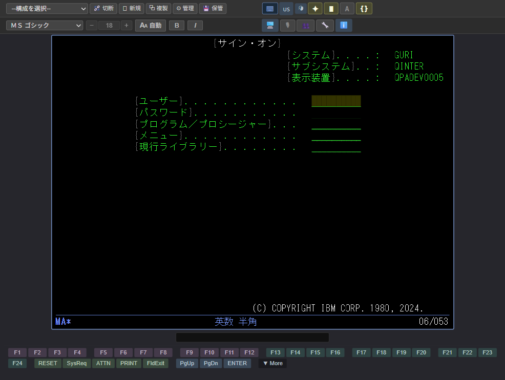
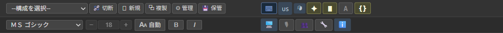
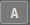
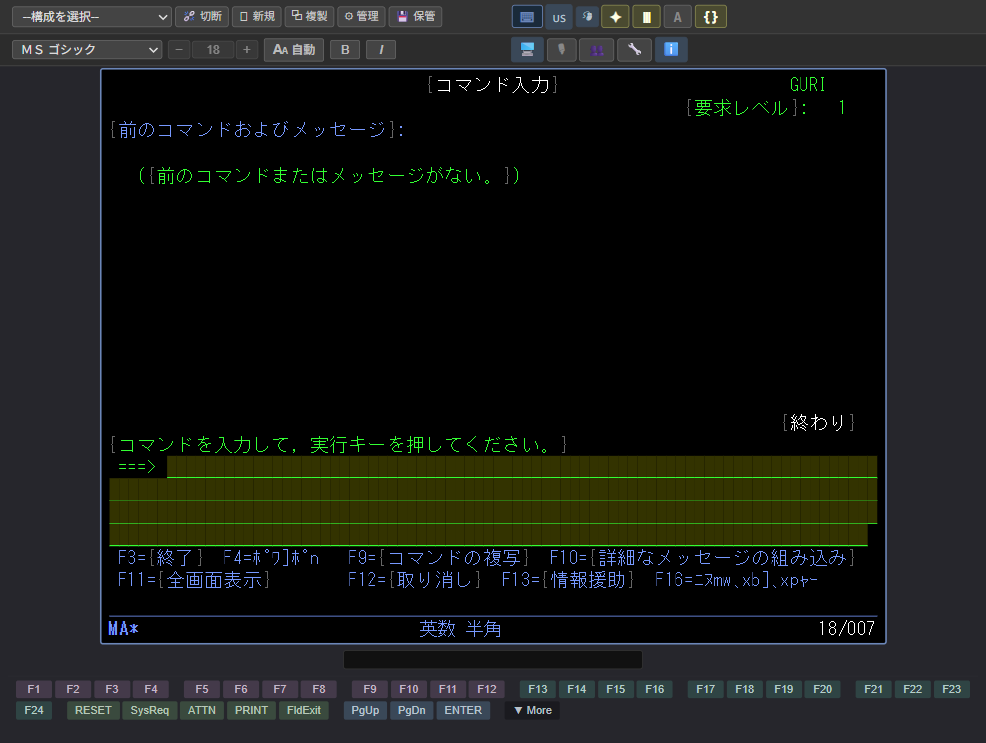
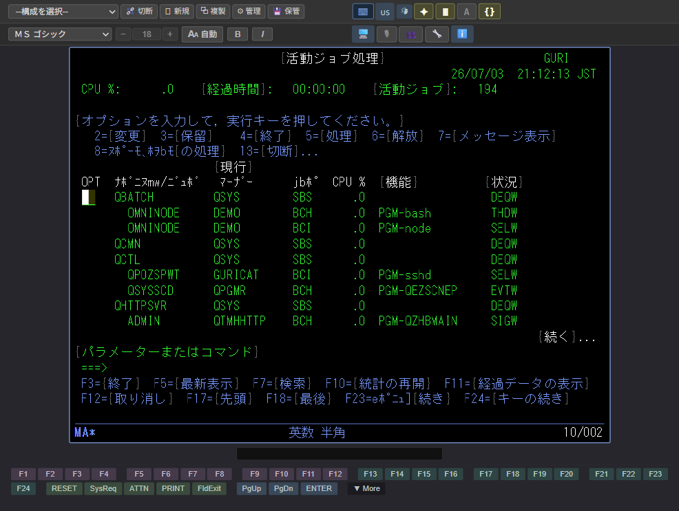
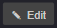
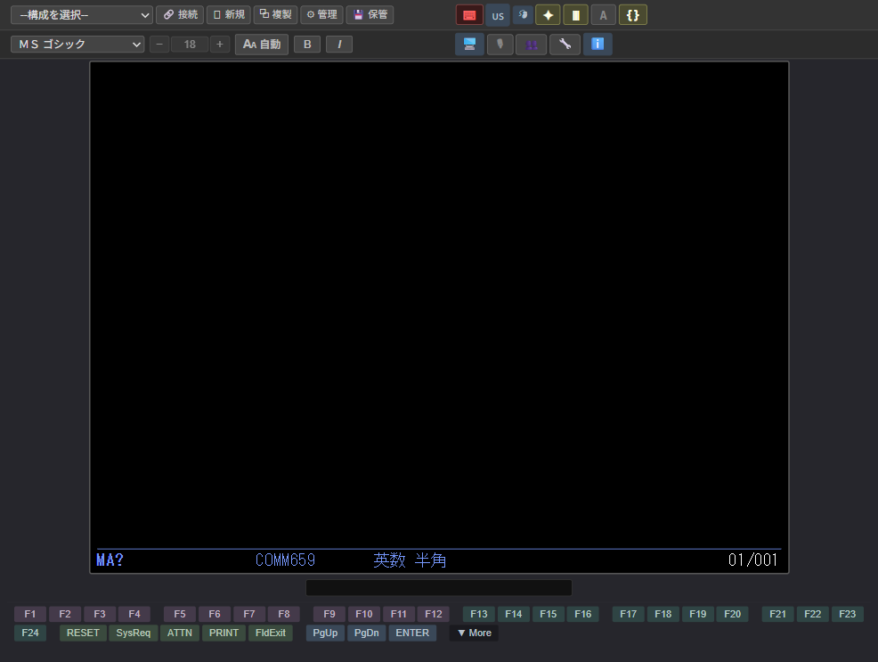
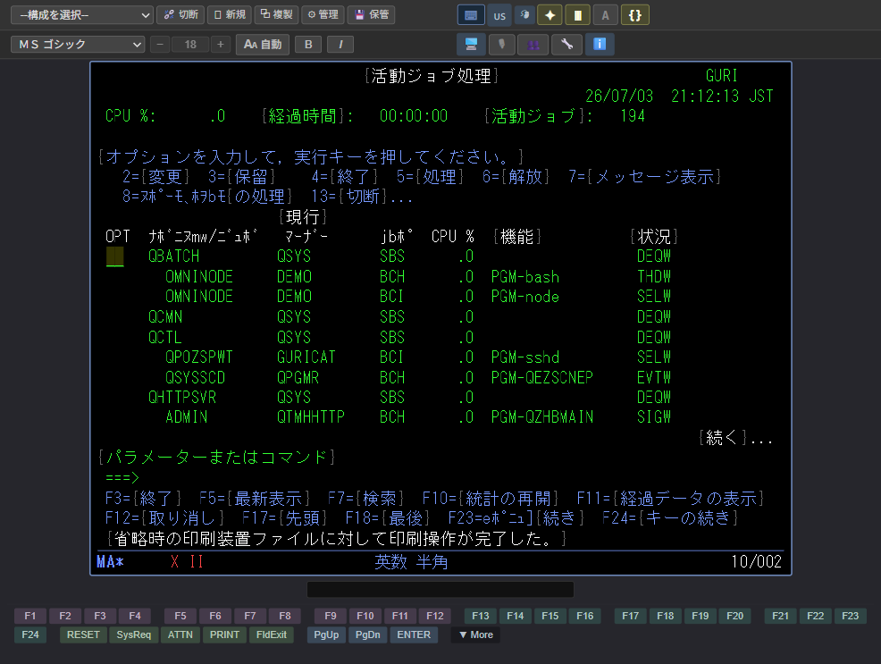

1はじめに
1.1 本製品の概要
IBM 5250 MCP は、IBM i (旧称 AS/400, iSeries) 上で動作する 5250 端末画面を、Web ブラウザー上で操作するための開発支援用ソフトウェアです。あわせて Model Context Protocol (MCP) サーバーとしても動作し、生成 AI エージェント (Claude 等) からの自動操作にも対応しています。
- Web ブラウザーで操作 専用クライアントの導入は不要です。お手元の Web ブラウザーから 5250 画面を操作できます。
- 日本語表示に対応 DBCS (2 バイト文字) と SBCS (1 バイト文字) が混在する画面を正しく表示します。
- 自動入力機能 よく行う一連の操作を「AUTOTYP スクリプト」として保存し、ワンクリックで再現できます。
- MCP サーバー対応 生成 AI エージェントから 5250 画面を呼出し、自動操作させることができます。テストの自動化、運用バッチへの組み込みにご活用いただけます。
1.2 本ガイドの構成
| 章 | 主な内容 |
|---|---|
| 第 1 章 | 本製品の概要と本ガイドの構成をご紹介します。 |
| 第 2 章 | 画面の各部の名称と役割を説明します。 |
| 第 3 章 | 接続を開始し、サインオンする手順を説明します。 |
| 第 4 章 | 文字入力、ファンクションキー、コピーと貼り付けなどの基本操作を説明します。 |
| 第 5 章 | AUTOTYP、操作記録、表示切替などの便利な機能を説明します。 |
| 第 6 章 | 動作がおかしいときの確認手順をご案内します。 |
| 第 7 章 | 本ガイドで使用する専門用語を解説します。 |
| 第 8 章 | キーボードショートカット一覧です。 |
2各部の名称
2.1 画面全体
本製品の画面は、次の 3 つの領域から構成されています。①〜③ の番号と画面上の対応位置をご確認ください。

1 2 3- ツールバー上下 2 段のツールバーがあります。1 段目に接続の管理・構成の編集・設定の保管、2 段目に表示フォントとサイズの設定が並びます。入力先 (KBD ON/OFF) や表示切替のボタンもこの領域に含まれます。ファンクションキーや AUTOTYP 操作ボタンも画面の周囲に配置されます。
- 5250 画面IBM i から送られてくる画面を表示します。文字を入力するための「入力フィールド」もここに表示されます。
- 状況表示行 (OIA)キーボードの入力状態、カーソル位置、通信状態などを表示します。詳しくは 2.3 節をご覧ください。
2.2 ツールバーの説明

各ボタンの説明は次のとおりです (下表の左列は実際のボタンの外観です)。
| ボタン | 説明 |
|---|---|
| 1 段目 — 接続・構成 | |
| 切断 / 接続。現在のセッションを切断します。切断中は接続ボタンに変わります。接続時はそのまま現在のウィンドウで接続が始まり、新しいウィンドウは開きません。 | |
| 新規。新しい未接続のウィンドウを開きます。複数の 5250 セッションを同時利用したい場合にお使いください。 | |
| 複製。現在のセッションと同じ接続構成で新しいウィンドウを開きます (接続もすぐに行われます)。未接続のときは「新規」と同じ動作で、未接続のウィンドウが開きます。 | |
| 管理。接続先構成の追加・編集・削除を行うダイアログを表示します。表示フォントやサイズの初期値も構成ごとに指定できます。 | |
| 保管。現在の表示フォント・サイズ・太字・斜体などの設定を、接続中の構成に保存します。次回同じ構成で接続したときに、その設定が復元されます。 | |
| キーボード入力先。キーボード入力先を 5250 画面 (オン) とツールバー操作 (オフ) で切り替えます。Ctrl + K でも切替できます。 | |
| 言語切替。ビューアー UI の表示言語 (日本語 / 英語) を切り替えます。切り替えると、新規接続構成を作成するときの既定フォントと既定ホスト・コード・ページも変わります (日本語: ＭＳゴシック / cp1399、英語: Consolas / cp037)。保存済みの構成は影響を受けません。 | |
| ホイール設定。マウス・ホイールでの画面スクロールに関する設定ダイアログを開きます。 | |
| 入力強調。入力フィールドの黄色強調表示を切り替えます (オン / オフ)。 | |
| 桁区切り。桁区切りの表示を「線」と「点」で切り替えます。 | |
 | A / ｱ。SBCS のコードページを切り替えます (DBCS セッション限定)。A = 英小文字 (cp1027)、ｱ = カタカナ (cp290) |
| { } / · ·。シフト文字 (SO/SI) の表示・非表示を切り替えます (DBCS セッション限定)。 | |
| 2 段目 — 表示フォント | |
| フォント選択 | 5250 画面の表示フォントを選びます。一覧の上部に等幅フォント (推奨)、その下に OS にインストール済みの全フォントが並びます。日本語 (DBCS) セッションでは、漢字を正しく表示できる日本語フォントが初期選択されています。 |
| − / サイズ / + | フォントサイズを変更します。自動モードでは現在使用中のサイズが表示され (変更不可)、固定モードでは数値を直接入力できます。− / + で 1 px ずつ増減します。 |
| 自動 / 固定。サイズの調整方式を切り替えます。自動はウィンドウの大きさに合わせて、5250 画面が収まるようサイズを自動調整します。固定は指定したサイズに固定し、5250 画面がちょうど収まるようウィンドウの大きさを合わせます。 | |
| 太字 (B)。太字表示の オン / オフ を切り替えます。 | |
| 斜体 (I)。斜体表示の オン / オフ を切り替えます。 | |
| ウィンドウモード切替。ビューアーのウィンドウを「アプリウィンドウ (アドレスバーのない専用ウィンドウ)」と「通常のブラウザーウィンドウ」の間で切り替えます。ボタンには切替先のアイコンが表示されます (🌐 = 通常ウィンドウへ / 🖥 = アプリウィンドウへ)。クリックすると現在のウィンドウが閉じて反対のモードで開き直され、次回起動時の既定も同時に変更されます。 | |
| マイク。クリックすると音声入力を開始します。発話を終えると自動的に停止します (録音中にもう一度クリックすると途中で停止できます)。詳細は 5.5 節をご参照ください。 | |
 | 専有 / 共有。入力モードを切り替えます。専有 (起動時の既定) は、同じ接続を別のブラウザーや PC で開いても、入力できるのは専有している 1 人だけです。共有にすると全員が入力でき、複数人で同時に操作できます。誰かが専有しているときは、他のブラウザーは専有に切り替えられません (ボタンが無効表示になります)。詳しくは 2.4 節をご参照ください。 |
| 全ツールバー非表示。すべてのツールバー (上の 2 段のツールバー・通知領域・ファンクションキーのツールバー) を非表示にして、5250 画面だけを表示します (OIA は残ります)。これは非表示専用のボタンです。再表示するには、5250 画面の外側のグレイの領域をクリックします (非表示中はこのボタン自身も消えるため)。非表示にするとキーボード入力先が 5250 画面に切り替わり (キーボード入力先 オン)、空いた領域に合わせて 5250 画面のフォントサイズが再調整されます。接続構成ごとに初期状態を指定でき (「管理」ダイアログの「ツールバー初期非表示」)、接続時に適用されます。 | |
| ヘルプ (ℹ)。通常のブラウザーウィンドウでヘルプを開きます。本製品のバージョンとビルド日時、使用許諾契約 (EULA)、サードパーティ表記、ユーザー・ガイド (本書)、管理ガイドを参照できます。詳しくは 5.6 節をご参照ください。 | |
2.3 状況表示行 (OIA)
5250 画面の下端にある状況表示行 (Operator Information Area、略して OIA) には、現在のキーボード状態や通信状態が表示されます。
| 表示 | 意味 |
|---|---|
| MA* (1 桁目) | IBM i に接続中であることを示します。 |
| X II (9 桁目) | キーボードが一時的にロックされています。直前の操作 (印刷など) を本製品が処理中です。RESET キーで解除できます。 |
| X SYSTEM (9 桁目) | サーバーからの応答待ちです。しばらくお待ちください。 |
| COMM659 (19 桁目) | 通信が切断されています。再接続してください。通信が回復すると自動的に消えます。 |
| 英数 半角 / かな 全角 (26 桁目) | 現在の入力モードを示します (DBCS セッション限定)。 |
| A (43 桁目) | Caps Lock がオンであることを示します。 |
| ^ (52 桁目) | 挿入モードであることを示します。挿入モード中に表示されます。 |
| 18/007 (75 桁目) | 現在のカーソル位置 (行 18 / 列 7) を示します。行 2 桁、列 3 桁の組み合わせで表示します。 |
挿入モード中は OIA 52 桁目に「^」も表示されます。
2.4 入力の専有と共有
同じ接続を複数のブラウザーや PC で同時に開くことができます。このとき「入力モード」で、誰が入力できるかを制御します。ツールバーの 👤 / 👥 ボタンで切り替えます (画面は、どちらのモードでも開いている全員が見られます)。
| モード | 説明 |
|---|---|
| 👤 専有 (起動時の既定) | 専有している 1 人だけが入力できます。同じ接続を別のブラウザーや PC で開いても、他の人は文字入力・キー送信・カーソル移動ができません。 |
| 👥 共有 | 接続を開いている全員が入力できます。複数人で同時に操作したい場合にお使いください。入力は届いた順に処理されます。 |
誰かが専有しているあいだ、ほかのブラウザーの 👤 ボタンは無効表示になり、専有に切り替えられません。専有していた人が 👥 共有に切り替えるか、接続を閉じると、ほかのブラウザーが専有できるようになります。
3ご使用の前に
3.1 接続の開始
接続を始める手順は次のとおりです。
-
ブラウザーで本製品の画面を開きます
あらかじめ管理者から指示されているアドレス (例:
http://localhost:5250/) を Web ブラウザーで開きます。本製品を直接起動した場合は、未接続の画面が自動的に開きます。AI エージェント (MCP) からご利用の場合Claude 等の AI エージェントに接続を指示した場合は、この手順は不要です。接続が完了した時点で、その接続の画面を表示するウィンドウが自動的に開きます (1 接続 = 1 ウィンドウ)。 -
接続構成を選択します
ツールバー上部の「-- 構成を選択 --」のドロップダウンから、ご利用になる接続先を選択します。選択するとすぐに接続が開始されます。
接続構成が一覧にない場合お使いの接続先が一覧にないときは、管理者へお問い合わせください。または「⚙ 構成の管理」ボタンから新規追加することもできます (詳しくは「管理ガイド」をご参照ください)。 -
サインオン画面が表示されます
接続に成功すると、IBM i のサインオン画面が表示されます。
図 3.1-1 サインオン画面
3.2 サインオン
-
ユーザー名を入力します
「ユーザー」の欄にユーザー名 (管理者から指示された値) を入力します。
-
パスワード欄へ移動します
Tab キーを押すと、カーソルが「パスワード」の欄へ移動します。
-
パスワードを入力し、Enter キーを押します
パスワードを入力したあと、Enter キーを押します。サインオンに成功すると、IBM i のメニュー画面 (またはコマンド入力画面) が表示されます。

図 3.2-1 サインオン後のコマンド入力画面
4基本操作
4.1 文字入力
カーソルが点滅している位置 (= 入力フィールド) に、キーボードから文字を入力できます。
-
入力フィールドを選びます
マウスで入力したい位置をクリックするか、Tab キーで次のフィールドへ移動します。逆方向へは Shift + Tab を押します。
-
文字を入力します
キーボードから文字を入力します。日本語入力 (IME) も使用できます。
-
確定キーを押します
Enter キー、または該当する F1〜F24 キーを押すと、入力内容が IBM i へ送信されます。
- BackSpace: カーソルを 1 文字左に移動します (文字は削除されません)。
- Delete: カーソル位置の文字を削除し、右側を左へ詰めます。
- Insert: 挿入モード (= 文字を割り込ませる) と上書きモードを切り替えます。挿入モード中は OIA の 52 桁目に「^」が表示されます。
- End: カーソル位置から行末までを消去します (Erase EOF)。
2 バイト文字 (漢字・かな) を入力するフィールドでは、カーソルが入ると自動的に「かな 全角」モードに切り替わります (OIA に表示)。フィールドの種類によって入力できる文字が決まっており、種類に合わない文字を入力すると画面下部にメッセージが表示されて拒否されます。
- 2 バイト文字専用フィールド: 英数字を入力すると「入力として DBCS が必要である。」と表示されます。
- どちらか一方のフィールド: 最初に入力した文字が英数字ならそのフィールドは英数字専用、2 バイト文字なら 2 バイト文字専用になります (混在不可)。
4.2 ファンクションキー (F1〜F24)
5250 アプリケーションでは、F1〜F24 のファンクションキーが多用されます。一般的な割り当ては次のとおりです。
| キー | はたらき (一般的な例) |
|---|---|
| F1 | ヘルプを表示します。 |
| F3 | 現在の処理を終了します。 |
| F4 | 選択肢の一覧 (プロンプト) を表示します。 |
| F5 | 画面を最新に更新します。 |
| F12 | 処理を取り消して 1 つ前の画面へ戻ります。 |

4.3 コピーと貼り付け
-
範囲を選択します
マウスをドラッグすると、コピーしたい範囲が黄色く強調されます (ドラッグするだけで選択でき、Ctrl や Shift を押す必要はありません)。
キーボードでも選択できます。Shift を押しながら矢印キー (↑ ↓ ← →) でカーソルを移動すると、通過した範囲が黄色く強調されます。
-
コピーします
Ctrl + C を押すと、選択範囲がクリップボードへコピーされます。
-
貼り付けます
入力フィールドにカーソルを置き、Ctrl + V を押します。改行入りの複数行テキストも、フィールドの並びに従って自動的に貼り付けられます。
-
貼り付けを取り消します (任意)
貼り付けた直後に Ctrl + Z を押すと、貼り付け前の状態に戻せます。取り消せるのは貼り付け直後のみで、ほかのキーを押した後は取り消せません。
4.4 マウス操作
5250 画面上をマウスでクリックすると、その位置にカーソルが移動します。次の操作にも対応しています。
| 操作 | 動作 |
|---|---|
| 通常の位置をクリック | その位置へカーソルが移動します (サーバーへの送信は行いません)。 |
| 選択肢・プッシュボタンをクリック | 画面上の選択肢ボタンやプッシュボタン (DDS MOUBTN キーワード対応) を直接クリックして選択・実行できます。 |
| ドラッグ | 範囲を選択します (コピー用、4.3 節参照)。 |
| スクロールバーの矢印 (▲ / ▼) をクリック | 1 行ずつスクロールします。 |
| スクロールバーの軸 (矢印以外) をクリック | 1 ページずつスクロールします。 |
5便利な機能
5.1 AUTOTYP (自動入力)
AUTOTYP (オートタイプ) は、よく行う一連の入力をまとめて自動実行する仕組みです。例えば「サインオンしてからメニューを開く」までを 1 クリックで再現できます。
AUTOTYP の操作ボタンは、画面下部ツールバー右端の ▼ More ボタンをクリックすると現れる下段パネルにあります (表示中はボタンが ▲ Less に変わり、もう一度クリックすると格納されます)。

AUTOTYP 操作ボタンの説明は次のとおりです (下表の左列は実際のボタンの外観です)。
| ボタン | 説明 |
|---|---|
 | スクリプト選択。scripts フォルダーにある AUTOTYP スクリプトの一覧から、実行・編集の対象を選びます。 |
 | Rec (記録)。画面操作の記録を開始します。記録中はボタンが赤色に変わり、もう一度クリックすると停止して編集ダイアログが開きます (5.3 節)。 |
 | Run (実行)。選択したスクリプトを現在の画面で実行します。 |
| Pause (一時停止)。実行中のスクリプトを一時停止します。もう一度クリックすると同じ位置から再開します (実行中のみ押せます)。 | |
 | Stop (終了)。実行中のスクリプトを中止します。再開はできません (実行中のみ押せます)。 |
 | Edit (編集)。選択したスクリプトを編集ダイアログで開き、内容の確認・修正・保存ができます。 |
-
スクリプトを選びます
▼ More で表示される下段パネルの「-- autotyp --」のドロップダウンから、実行したいスクリプトを選択します。
-
実行します
▶ Run ボタンをクリックすると、選択したスクリプトが現在の画面で実行されます。
-
必要に応じて操作します
実行中の操作は次の 3 通りから選んでください。
- そのまま待つ: スクリプトの完了をお待ちください。
- 一時停止: ⏸ Pause をクリックします。もう一度クリックすると同じ位置から再開できます。
- 終了: ⏹ Stop をクリックします。実行を中止します。再開はできません。
5.2 接続後の自動実行
接続構成ごとに「接続後の自動実行 AUTOTYP」を設定しておくと、接続するだけで自動的にサインオン → メニュー表示までを行うことができます。設定方法は「管理ガイド」をご参照ください。
5.3 操作の記録
キーボードやマウスでの操作を AUTOTYP スクリプトとして自動記録できます。
-
記録を開始します
● Rec ボタンをクリックします。ボタンが赤色に変わり、記録中であることを示します。
-
記録する操作を行います
キー入力、ファンクションキー、貼り付けなど、AUTOTYP として保存したい操作を行います。
-
記録を停止します
もう一度 ● Rec ボタンをクリックすると、記録が止まり編集ダイアログが開きます。内容を確認し、必要に応じて修正してから保存します。
5.4 表示の切替
ツールバーのアイコンで、画面表示を好みに合わせて変更できます。
| アイコン | はたらき |
|---|---|
| ✦ | 入力フィールドを黄色く強調します。入力できる場所が一目でわかります (オン / オフ)。 |
| ⦀ / ┅ | 桁の区切りを縦線で表示するか、点線で表示するかを切り替えます。 |
| A / ｱ | SBCS の表示文字を、英小文字寄りかカタカナ寄りかで切り替えます (DBCS セッション限定)。 |
| { } / · · | シフト文字 (SO/SI) の表示・非表示を切り替えます (DBCS セッション限定)。 |
上記 4 つの表示切替は、ビューアー全体で 1 セットの初期値として保存されます (= 接続構成ごとではありません)。設定値はブラウザーを再読み込みしても保持されます。
5.5 音声入力
ツールバーのマイクボタンを使うと、マイクから話した内容を文字に変換し、Claude への入力として送ることができます。キーボードを使わずに、画面の操作や指示を音声で伝えられます。
音声認識の言語は、ビューアーの表示言語に連動します。表示言語を日本語にすると日本語 (ja-JP)、英語にすると英語 (en-US) で認識します (言語切替ボタンで切り替わります)。
-
音声入力を開始します
マイク ボタンをクリックします。ボタンの状態が変わり、マイクが有効になります (初回は、ブラウザーがマイクの使用許可を確認します)。
-
話します
入力したい内容を話します。話した内容が文字に変換されます。
-
Claude に送ります
変換された文字が Claude への入力として送られます。発話を終えると音声入力は自動的に終了します (途中で止めたいときは、もう一度マイク ボタンをクリックします)。
5.6 オンラインヘルプ
ツールバー 2 段目のヘルプ (ℹ) ボタンをクリックすると、通常のブラウザーウィンドウでヘルプが開きます。最初のページには次の情報が表示されます。
| 項目 | 内容 |
|---|---|
| バージョン | 本製品のバージョンとビルド日時です。お問い合わせの際にお知らせください。 |
| ライセンス | 使用許諾契約 (EULA) と、本製品に含まれる第三者ソフトウェアの帰属表示 (サードパーティ表記) を表示します。 |
| ヘルプ情報 | ユーザー・ガイド (本書) と管理ガイドを表示します。 |
ガイドを開くと、画面が左右 2 つの領域に分かれます。
| 領域 | 説明 |
|---|---|
| 左側 — 目次と検索 | 文書の切替、目次、検索ボックスがあります。目次の項目をクリックすると、右側の表示がその見出しへ移動します。検索ボックスに 2 文字以上入力すると、本文中の該当箇所が一覧表示され、クリックするとその位置へ移動して該当語が強調表示されます。 |
| 右側 — 本文 | 選択中の文書の本文です。画像を含む全文を表示します。 |
6困ったときは
6.1 接続できない
| 症状 | ご確認ください |
|---|---|
| 接続を選んでも画面が表示されない |
|
| OIA に COMM659 が表示される | 通信が切断されました。ツールバーの「🔌 接続」をクリックして再接続してください。通信が回復すると表示は自動的に消えます。 |

6.2 画面が応答しない
| 症状 | ご確認ください |
|---|---|
| キーを押しても反応しない / OIA に X II が表示されている | 本製品が直前の操作 (印刷など) を処理中です。RESET キーを押すと解除されます。 |
| OIA に X SYSTEM が表示されたまま | サーバーからの応答待ちです。通常はしばらくお待ちください。応答が長時間返らない場合は、SysReq (システム要求) を押し、表示された入力行に 2 を入力して Enter を押すと、IBM i 側で実行中のプログラムやコマンドを強制終了できます。それでも解消しない場合は管理者へご相談ください。 |

6.3 その他
| 症状 | ご確認ください |
|---|---|
| 文字が小さくて見えにくい | 2 段目ツールバーの + ボタンでフォントサイズを大きくしてください。「AA 自動」にすると、ウィンドウの大きさに合わせてサイズが自動調整されます。 |
| キーボードからの入力が 5250 画面に反映されない | KBD OFF になっています。KBD OFF ボタンをクリックするか Ctrl + K で ON に戻してください。 |
| 日本語が入力できない | IME を有効にしているか確認してください。OIA の表示が「英数 半角」のままになっていないか確認します。 |
7用語集
- IBM i
- IBM が提供する基幹システム向けのオペレーティング・システムです。旧称 AS/400、iSeries とも呼ばれていました。
- 5250
- IBM i との通信に用いられる端末プロトコルの名称です。本製品は TN5250E (Telnet 上の 5250) を実装しています。
- サインオン
- ユーザー名とパスワードを入力して IBM i にログインすることを指します。
- ファンクションキー
- キーボードの最上段にある F1〜F12 等のキーです。5250 アプリケーションでは F1〜F24 までが使用されます。
- OIA (状況表示行)
- Operator Information Area の略です。画面下端に表示される、キーボード状態などの表示行を指します。
- X II / X SYSTEM
- キーボードがロックされていることを示す OIA 表示です。X II は本製品が処理を行っている状態、X SYSTEM はサーバーからの応答を待っている状態を示します。
- COMM659
- 通信が切断されたことを示す OIA 表示です。通信が回復すると自動的に消えます。
- 挿入モード
- 入力した文字を、カーソル位置に割り込ませて挿入するモードです。Insert キーで切り替えます。挿入モード中は OIA の 52 桁目に「^」が表示されます。
- AUTOTYP
- あらかじめ記録した一連の入力操作を自動的に実行する、本製品独自の仕組みです。
- MCP (Model Context Protocol)
- Claude 等の生成 AI エージェントから外部ツールを呼出すための通信規約です。本製品は MCP サーバーとして動作し、AI エージェントから 5250 画面を自動操作させることができます。
- 接続構成
- 接続先のホスト名・ポート番号・コードページなどをひとまとめにした設定のことです。複数の接続先を切り替えてご利用いただけます。
- DBCS / SBCS
- DBCS は 2 バイト文字 (漢字、ひらがな、カタカナ等)、SBCS は 1 バイト文字 (英数字、半角カタカナ等) のことです。
8キーボード一覧
8.1 基本操作キー
| キー | はたらき |
|---|---|
| Enter | 入力内容を送信します。 |
| Tab | 次の入力フィールドへ移動します。 |
| Shift + Tab | 前の入力フィールドへ移動します。 |
| Home | 最初の入力フィールドへ移動します。 |
| ← → ↑ ↓ | カーソルを上下左右に移動します。 |
| BackSpace | カーソルを 1 文字左に移動します (文字は削除しません)。 |
| Delete | カーソル位置の文字を削除して右側を詰めます。 |
| Insert | 挿入モードと上書きモードを切り替えます (オン / オフ)。 |
| End | カーソル位置から行末までを消去します (Erase EOF)。 |
| Esc | ダイアログを閉じる、ATTN キーを送信する等の用途があります。 |
8.2 ファンクションキー
| キー | はたらき |
|---|---|
| F1〜F12 | そのまま F1〜F12 として送信されます。 |
| Shift + F1〜F12 | F13〜F24 として送信されます。 |
8.3 クリップボード操作
| キー | はたらき |
|---|---|
| Ctrl + C | 選択範囲をクリップボードへコピーします。 |
| Ctrl + V | クリップボードの内容を貼り付けます。 |
| Ctrl + Z | 貼り付けた直後に押すと、貼り付けを取り消します。 |
| マウスドラッグ | 範囲を選択します (修飾キー不要)。 |
| Shift + 矢印キー | カーソルを移動して範囲を選択します (マウスを使わない選択方法)。 |
8.4 特殊操作
| キー | はたらき |
|---|---|
| Ctrl + K | キーボード入力先 (KBD ON / OFF) を切り替えます。 |
| 左 Ctrl (単独) | RESET キーを送信します。 |
| 右 Ctrl (単独) | Field Exit を送信します。 |